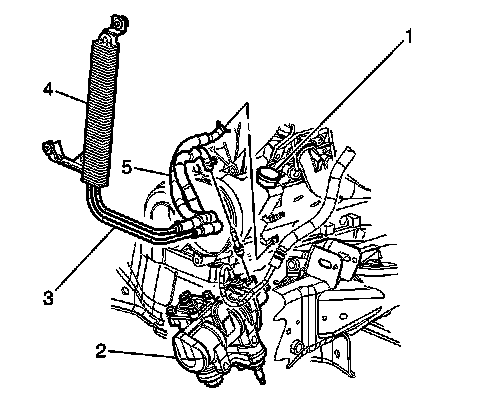
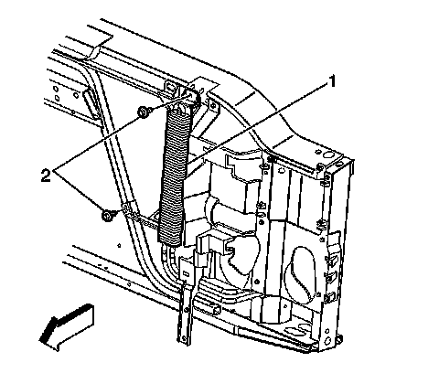

Power Steering Cooler Pipe/Hose Replacement (With Hydroboost)
Power Steering Cooler Pipe/Hose Replacement (With Hydroboost)
Removal Procedure
1. Remove the front grille.
2. Remove the radiator air baffle and deflector-upper.
3. Remove the radiator grille reinforcement support.

Notice: Refer to Power Steering Hose Disconnected Notice.
4. Place a drain pan under the vehicle.
5. Siphon the fluid from the reservoir to prevent excess spillage.
6. Remove the clamp and disconnect the power steering gear outlet hose (3) to the power steering gear (2).
7. Remove the clamp and disconnect the power steering cooler hose (5) to the power steering pump (1).

8. Remove the bolts (2) retaining the power steering cooler from the radiator support.
9. Remove the power steering cooler from the vehicle.
Installation Procedure
Notice: Refer to Fastener Notice.
1. Install the power steering cooler (1) to the radiator support.
Tighten the bolts retaining the power steering cooler to 9 N.m (80 lb in).
2. Connect the power steering cooler hose (5) to the power steering pump (2) and reposition the clamp.
3. Connect the power steering outlet gear hose (3) to the power steering gear (1) and reposition the clamp.
4. Fill and bleed the power steering system. Refer to Power Steering System Bleeding.
5. Inspect all the hose connections for leaks.
6. Install the radiator grille reinforcement.
7. Install the radiator air baffle and deflector-upper.
8. Install the front grille.